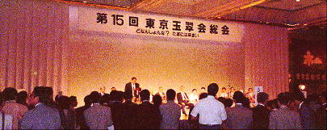
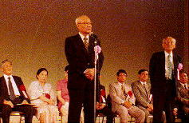
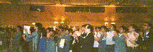
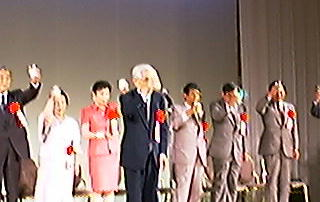
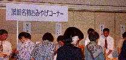
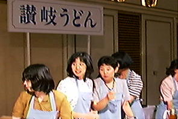
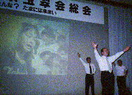
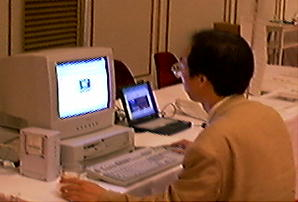

|
第15回東京玉翠会総会の報告
第１５回東京玉翠会総会は、平成９年７月１２日午後５時から東京プリンスホテルで行われ、当日は雨にもかかわらず、参加者は約８００人と大盛況でした。

今年の総会のテーマは、「どなんしょんな？たまには来まい」。
お集まりいただいた皆様が、年齢を超え、「讃岐弁を話していた高中・県女・高高それぞれの青春」を「故郷」として心の中に取り戻していただきたい、懐かしい讃岐弁で大いに語り、当時を思い出し、年に一度の集いをお楽しみいただきたいという願いから、総会のテーマとしました。（４８年学年幹事より）
 総会は、まず最初に役員改選が行われ、東京玉翠会会長が、宮井仁之助会長から、辻義文新会長にバトンタッチしました。
宮井会長は、旧三同窓会の統合に携わり、統合後は、平井会長、大島会長の下で副会長を務め、大島会長急逝の後、４年間会長職を務めていただきました。
また、辻新会長は、昭和２０年（第５０期高中）卒業であり、現在、日産自動車の会長、経団連の副会長の要職につかれています。
上の写真は、辻新会長のご挨拶です。
会場では、ＮＴＴのご協力をいただき、マルチメディア会議システム「ｐｈｏｅｎｉｘ（フェニックス）」を利用して、高松との間でミニ対談を行いました。
ＰＣショップリンクハウス高松に、屋島篝火歌舞伎の実行委員長加藤達雄様、一日一言の四国新聞論説委員明石安哲様、先ごろ勲四等瑞宝章を受勲され高松高校で教頭を含め約１６年という長い間、教鞭を取られた、古文の藤本純夫先生にお越しいただき、東京と高松を結び、当時の思い出などを語っていただきました。
お楽しみ抽選会は、「笑ってゆるしてウルトラクイズ」と題して、母校の新校舎に関する問題などが出されました。
新校舎を背景にして、現役高高生や、体育の勝瑞先生たちが出題者となり、その映像を会場で映し、各卒業年度ごとにグループとなって解答するという形式でした。
勝瑞先生がでてきたときは、「変わらないなあ」という声と、「変わったなあ」という声とが入り交じって、あちこちから聞こえてきました。






なお、インターネット研究会では、当日パソコンを会場に持ち込み、会場内をデジタルカメラで撮影し、直ちに高松高校東京玉翠会のページにアップして、総会の様子を速報しました（上の写真）。
 高松高校東京玉翠会トップページ 高松高校東京玉翠会トップページ
|